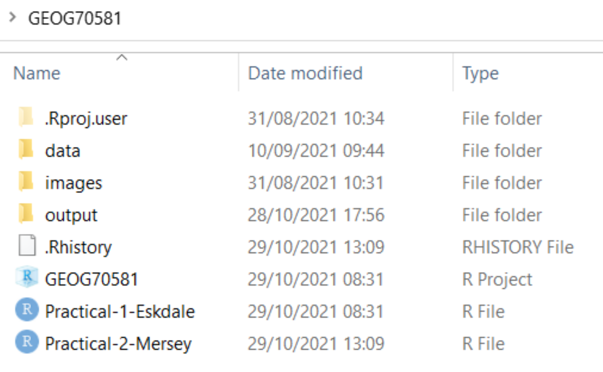

Chapter 13 Handy Hints
This chapter contains a few handy hints which may be useful if you’re having any issues loading R packages or running Whitebox tools. We covered most of these during our session in Week 9 but these are included here for reference.
If there are any questions regarding Assessment 2 or the practical instructions, please do get in touch at my @manchester email.
- Tip 1: Make sure to initialise an R project for your work (Section 5.4) and ensure this is created for your GEOG70581 directory. This should resemble the following, with the R project file and a separate R script for the Eskdale and Mersey Basin practicals:

Tip 2: Remove spaces in directories or file paths. As a rule, avoid using spaces when naming files or folders as this can cause issues, particularly when coding:
- “P:/GIS and Environmental Applications/GEOG70581/…” Bad
- “P:/GIS_and_Environmental_Applications/GEOG70581/…” Good
Tip 3: Make sure to read error messages (red text in the R console). If this appears, it usually means that something has gone wrong!
Tip 4: Make sure to inspect output files. When you run a command (e.g. a Whitebox function), check that it produces the intended output (e.g. a raster file (.tif) in the output directory). If there is an error or the output hasn’t been created, subsequent code will fail.
Tip 5: If you’re having difficulty loading the
rasterorsfpackages on a University managed computer, this is due to multiple package installs. Go to the packages window, identify the older version of each package, and tick the check box to load it into your R library.Tip 6: While you will not be assessed on the quality of your code (you do not have to submit your code for the assessment), remember that well-formatted code (with comments and good structure) is easier to read and understand and will be less prone to error.
Inspect the code below:
# Function to check and install packages
check.packages <- function(pkg){
new.pkg <- pkg[!(pkg %in% installed.packages()[, "Package"])]
if (length(new.pkg))
install.packages(new.pkg, dependencies = TRUE)
sapply(pkg, require, character.only = TRUE)
}
# Checks and installs packages
packages <- c("ggplot2", "sf", "here", "raster", "whitebox", "ggspatial", "patchwork")
check.packages(packages)
# Sets file path for DEM
dem <- here("data", "practical_1", "dem_10m.tif")
# Breach and fills depressions
wbt_fill_depressions(dem, here("output", "practical_1", "dem_10m_fill.tif"))
wbt_breach_depressions(dem, here("output", "practical_1", "dem_10m_breach.tif"))
# Calculates D8 pointer
wbt_d8_pointer(here("output", "practical_1", "dem_10m_fill.tif"),
here("output", "practical_1", "dem_10m_D8_pointer.tif"))
# Calculates D8 accumulation file (SCA), with log-transformed values
wbt_d8_flow_accumulation(here("output", "practical_1", "dem_10m_fill.tif"),
here("output", "practical_1", "dem_10m_flow_accumulation.tif"),
out_type = "specific contributing area",
log = "TRUE")This code includes comments for each main code block, line spaces to distinguish different parts of the code, and is written in a logical order (e.g. first loading packages, then loading/selecting data, running tools). Any non-essential code has been removed e.g. additional calls to install.packages() or library().
If there are any other questions, please do get in touch.